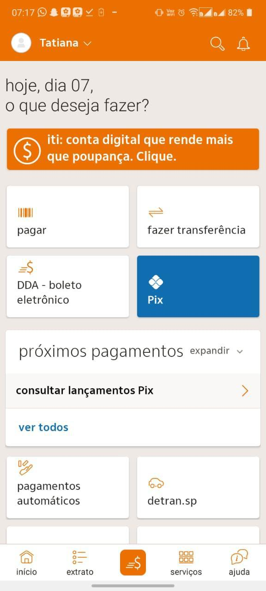
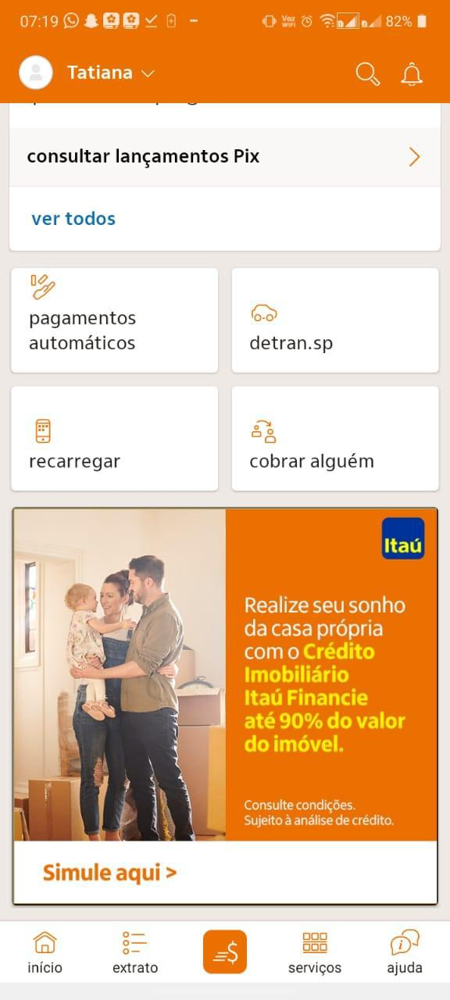
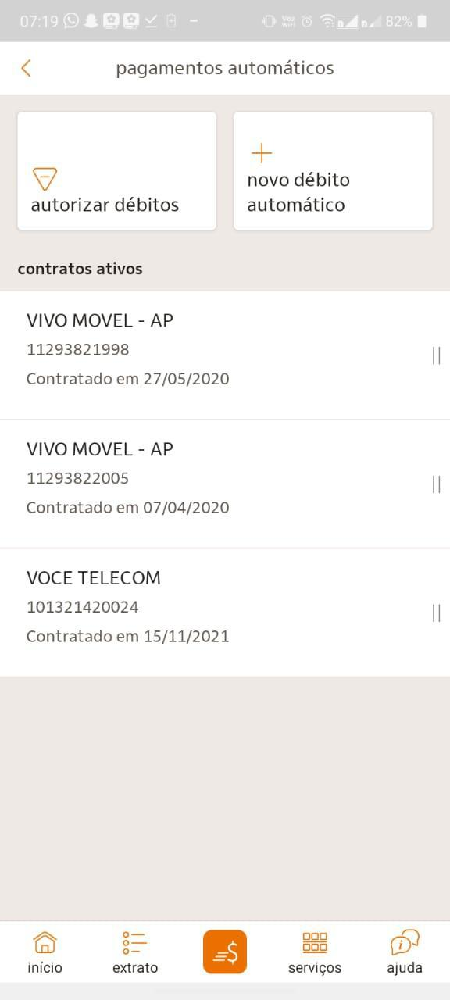
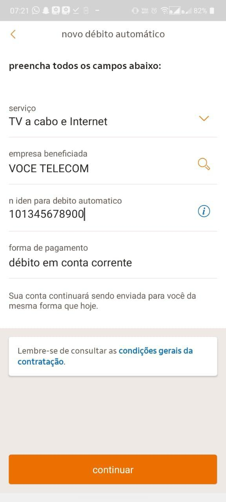

Passo 1: Acesse sua conta via Internet Banking e selecione a categoria Transações. Em seguida, clique em Pagamentos Automáticos.


Passo 2: Na categoria Pagamentos Automáticos. Clique em Novo Débito Automático.

Passo 3: Adicione as informações:
- Serviço: TV a cabo e internet;
- Empresa Beneficiada: VOCE TELECOM;
- Número Identificador para Débito Automático;
- Forma de pagamento.
E clique em continuar.

Pronto! Seu débito automático foi devidamente cadastrado.